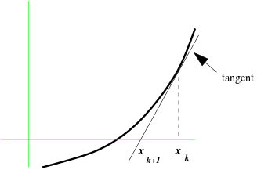
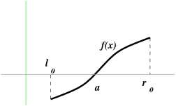

| Last updated on: THU FEB 27 IST 2020 |
|  |
|---|
| Approximating $f(x)$ by the tangent at $x_k$ |
EXAMPLE: Let us solve $\cos(x)=x$ using Newton-Raphson method starting with $x_0=1.$ Here $f(x) = \cos(x)-x,$ and hence $f'(x) = -\sin(x)-1.$ So the Newton-Raphson iteration is $$ x_{k+1} = x_k + \frac{\cos(x_k)-x_k}{\sin(x_k)+1}. $$ A few iterations are as follows.
k x ------------- 1 0.7503639 2 0.7391129 3 0.7390851 4 0.7390851We already see convergence.
The following J code lets you explore this.
f=:-cos nr=:- (f % (1+sin)) nr^:(i.10) 1J help
EXERCISE: Solve using the Newton-Raphson method:
EXAMPLE: Let us solve the system $$\begin{eqnarray*} xy+x^2-y^3-1 = 0\\ x+2y-xy^2 -2 =0 \end{eqnarray*}$$ Here $f_1(x,y) = xy+x^2-y^3-1$ and $f_2(x,y) = x+2y-xy^2 -2.$ So the Jacobian matrix is $$ D\ff(\xx) = \left[\begin{array}{ccccccccccc}y+2x & x-3y^2 \\ 1-y^2 & 2-2xy \end{array}\right] $$ This has inverse given by $$ (D\ff(\xx))^{-1} = \frac{1}{(y+2x)(2-2xy)-(x-3y^2)(1-y^2)} \left[\begin{array}{ccccccccccc}2-2xy & 3y^2-x\\ y^2-1 & y+2x \end{array}\right] $$ The following table shows a few sample iterations.
n x y ------------------------------------- 0 0.34 0.5 1 1.0896157 0.6101134 2 0.8689638 0.9595518 3 0.9842601 0.9682277 4 0.9902055 0.9854784 5 0.9951545 0.9927297 6 0.9975793 0.9963689 7 0.9987903 0.9981854 8 0.9993953 0.9990929 9 0.9996977 0.9995465 10 0.9998489 0.9997733 11 0.9999244 0.9998866 12 0.9999622 0.9999433 13 0.9999811 0.9999717 14 0.9999906 0.9999858 15 0.9999953 0.9999929 16 0.9999976 0.9999965 17 0.9999988 0.9999982 18 0.9999994 0.9999991 19 0.9999997 0.9999996 20 0.9999999 0.9999998Obviously we are converging to the solution $x=1,y=1.$
f=: 3 : '( ((r*s) + (r^2) - (s^3) + 1), (r+(2*s)-(r*s^2)+2) ) [ ''r s''=:y' d=: 3 : '(2 2 $ (s+2*r), (r-3*s^2), (1-s^2), (2 * 1-r*s)) [''r s''=:y' nr2=: - f %. d nr2^:(i.20) 0.34 0.5J help For $n=2$ it was easy to invert the matrix analytically. For higher dimensions we should not explicitly invert the Jacobian matrix. Instead, we should solve the system $$ (D\ff(\xx_n)) \yy= \ff(\xx_n) $$ for $\yy$ at each step. We shall learn such solution techniques in the next page.
EXERCISE:
Solve using the Newton-Raphson method:
$$\begin{eqnarray*}
\sin xy + e^y & = & 7.10964\\
(x+y)^2 - \cos(xy^2) & = & 24.1561
\end{eqnarray*}$$
|  |
|---|
| $f(x)$ has a zero at $a$ |
EXAMPLE: Let us apply the bisection method to solve the equation $\cos(x)=x.$ This is same as finding the zero of $$ f(x) = \cos(x)-x. $$ It is easy to see that $f(0) = 1$ and $f(\frac{\pi}{2}) = -\frac{\pi}{2}.$ Since these have opposite signs we can start the bisection method with $$ l_0=0~~~\mbox{ and }~~~ r_0 = \frac{\pi}{2} = 1.5708. $$ Our first guess is $$ m_0 = \frac{l_0+r_0}{2} = 0.7854. $$ Proceeding like this we get the following table.
k left right mid ------------------------------ 0 0 1.5708 0.7854 1 0 0.7854 0.3927 2 0.3927 0.7854 0.5890 3 0.5890 0.7854 0.6872 4 0.6872 0.7854 0.7363 5 0.7363 0.7854 0.7609 6 0.7363 0.7609 0.7486 7 0.7363 0.7486 0.7424 8 0.7363 0.7424 0.7394 9 0.7363 0.7394 0.7378We proceed until the interval is short enough, i.e., $(r_k-l_k)< \epsilon$ for some specified $\epsilon.$ In the above table we have stopped once the $l_k$ and $r_k$ are equal up to the first two decimal places. Thus, we see that the answer is 0.74 up to the first two decimal places.
The following J code explores this.
f=:-cos
m=:0.5 * +/
n=:{.,m
p=:m,{:
c=:0&> @f @ m
bis=: (c * p) + (-.@c * n)
bis^:(i.20) 0 1
J help
EXERCISE:
Use the bisection method to solve $2e^x-2x-3 = 0$ for $x\in(0,2).$
PROJECT:
A certain trait in rabbits is controlled by a pair of alleles, $a$ and $A.$ Each rabbit receives one of these
from the father and another from the mother. Thus, the possible pairs are $aa,$ $aA$ and $AA$ (order is
immaterial). The probability that a parent gives an $a$ to the offspring is $p$ (unknown). So the probability
of an $A$ is $q = 1-p.$ The father's contribution is independent of the mother's, and so the probabilities of
$aa,$ $aA$ and $AA$ in the offspring are, respectively, $p^2,$ $2pq$ and $q^2.$ Our
aim is to estimate $p.$ Unfortunately, it is impossible to detect the pair an offspring has. It is only possible to
detect if an offspring has at least one $A$, i.e., whether $aa$ or $\{aA, AA\}.$ The probabilities are,
respectively, $p^2$ and $q^2+2pq.$ In a random sample of 100 offsprings, only 23 are without any $A.$
The probability of this is
$$L(p)=p^{46}\big(q^2 +2pq\big)^{77}.$$
The value of $p\in(0,1)$ for which this is the maximum is called the maximum likelihood estimator of $p.$ Find
it.
PROJECT:
The file data.txt has $n=996$ random numbers that are generated from the density
$$f(x; p, a) = \frac{ p^a}{\Gamma(p)} e^{-a x},\quad x>0$$
for unknown constants $p, a > 0.$ The principle of maximum likelihood estimation suggests estimating
$p,a $ by maximising
$$L(p,a) = \prod_{i=1}^n f(x_i; p,a),$$
where $x_1,...,x_n$ are the data in the file. Perform this estimation, and check your answer
graphically by overlaying the graph of $f(x;p,a)$ on the histogram of the data.
gamma, dgamma and
digamma useful here.]